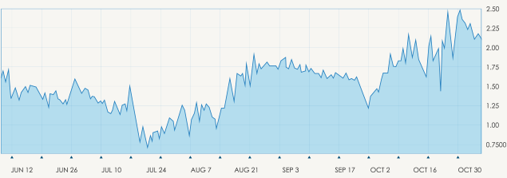

一、如何读懂外汇图表
投资者拥有很多选顶，可以找出跟踪外汇
货币对、商品等金融产品趋势的方法，其中最受信任的选项可能是追踪图表。使用图表的投资者更愿意跟随图表工具和指标的精确性，识别趋势、找到进出场的价格点位，被视为技术投资者。
除了技术投资者，还有基本面投资者。基本面投资者更愿意追随有关经济增长、就业形势、政治威胁和利率等切实信息的消息来源。

首先，在试图解析呈现的信息之前，你需要知道什么是图表。总的来说，图表是对金融产品之间汇率的描述，并以曲线的形式绘制于图表上。解读图表的能力是作为投资者的一部分要素，因为它不仅使您追踪当前交易，还帮助您发现一根正在形成的趋势线、发现未来交易可能，是交易不可或缺的部分
三、理解趋势
当您察看一张图表，在上面发现一组数据绘制出一个大致的方向时，可以找出某一金融产品正在移动的大方向。每张图表和曲线不同，在大部分图表上，可以相当轻松地找出趋势，而其它图表上的趋势可以更加复杂。趋势通常走出一系列的波峰和波谷（高点和低点）。当您提到一个上涨趋势时，您会看到一连串上抬的高点和低点，而熊市趋势，是由一连串下降的低点和高点组成。
还有一种趋势被称为横盘震荡，这描述的是买卖双方力量相当，呈现出价格横盘小幅波动或是区间震荡，而没有明确的方向和波峰波谷。
趋势不仅取决于其方向，而且取决于趋势发生的持续时间。长期、短期和中级趋势共存，方向可能相同，也可能相反。趋势基于时间，所以不解自明，趋势也是基于时间，当您解读图表时，看见的趋势线的一部分。
清楚全面地理解图表所呈现及提供的信息，对交易至关重要。当您开始网上交易，会发现交易圈有三种流行的主要图表类型。投资者个人的技巧水平不同，在每种图表上看到的信息量不同：
折线图 – 最基本的图表，也是新手投资者的进阶基础。这种图表只呈现一段时间内的收盘价。在分析数据时，收盘价被视为最重要的因素。折线图的形成本质：将一定时间周期内的收盘价连接在一起。折线图没有可视化信息或交易区间，也就是没有高低点，也没有开盘价。
柱状图 – 是对折线图的补充，在曲线图表上的每个数据点上，再加入几个信息的关键成分。柱状图由一系列垂直线构成，每根线描绘出交易信息，即交易期间内的高低点、开收盘价。开收盘价以较短的水平线条构成。
开盘价是位于垂直柱条左侧的破折号，而收盘价反之，以一根相似的水平线代表，不过是在垂直柱条右侧。这种图表非常容易理解，如果左侧破折号（开盘价）低于右侧破折号（收盘价），则柱子将是绿色、黑色或蓝色阳线，代表着价格上涨、工具升值。反之亦然，股票价值下降以红色表示。
蜡烛图（K线图）– 如果掌握了折线图和柱状图，可以进阶到K线图。这种图表与柱状图相似，但更容易理解。这两种类型的图表，由垂直线条代表交易期间的价格区间，而K线的实体用不同的颜色代表该期间内市场的变化。
五、K线图详解
早在17世纪，日本就开始用技术分析交易大米。与形成于二十世纪前后的美国版本不同，但原理相似。
为了开始创建与解读K线图，人们必须知道数据中包含的最高点、最低点、开盘价与收盘价。
“中空”及“有色”的部分被称为实体。实体上下的长细线代表区间的高点或低点区间，也被称为影线、烛芯或尾巴。如果细线在实体的上部，是告诉我们高点和收盘价，而在底部，则代表低点以及低点的收盘价。
每家经纪商的K线实体的颜色各不相同，可能是绿色或蓝色代表着价格上升，或者红色代表价格下跌，或者中空的K线代表收盘价高于开盘价，表明投资者买进。填充/有颜色的K线代表收盘价低于开盘价，将提示沽出头寸。
或长或短的实体将表明投资者中买进或沽出的压力。短实体代表价格波动很小，通常被视为盘整形态，即众所周知的“十字星”。
十字星是K线图表的重要方面，提供多个形态的信息。当金融产品的开收价完全相等以及价差不太大时，形成十字星。十字星是向投资者表明：长白或长绿K线过后，买需开始减弱，或在长（蓝或黑）K线后，抛压开始减弱，并且供需开始趋稳。
六、图解分析
图解分析中最流行、最可靠的形态之一是头肩形态。
这是一种反转形态，形成时是当前趋势很快将反转的信号。头肩形态有两个版本：
头肩顶：一般形成于上涨趋势的顶部，并暗示一旦形态完成，资产的价格将下跌。
头肩底（或倒头肩形态）：一般形成于下跌趋势中，暗示资产的价格将要上涨。
两者的视觉结构相似，都包含四个要素：两个肩膀、一个头部和一根颈线。当颈线（支撑位和阻力位）告破、第二个肩膀形成，形态成形。头肩形态由图表上的峰谷构成。投资者还可以使用许多其它的形态用于分析、交易，比如：双顶/底、三顶/底、Pinocchio、看涨/看跌吞噬，等等。
七、将技术分析工具融入到您的图表中
当解读与检视图表变得越来越得心应手，您将学习如何增添其它工具，比如衡量市场波动率和价值变化的技术分析工具。通常情况下，当一些股票或货币被标为“超卖”或“超买”时，这些技术指标可以辅助您拨云见日，寻找到可能被忽视的准确信息。
整合到您的实时图表上的技术指标，比如成交量、趋势线、斐波纳契位、随机指标等，实质上可以消除市场噪音，更好地描绘出市场和趋势的未来。